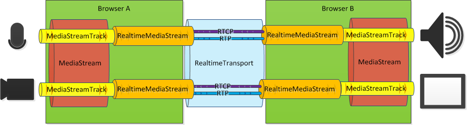

An API is described for sourcing and terminating streams of real-time media in a browser. The API provides a means of describing how media streams are serialized into a stream of RTP packets or deserialized from a stream of packets.
The API is structed in two sections: Real-Time Media Streaming and Real-Time, Peer-to-Peer Transport.
Thanks in no small part to the exponential improvements in Web infrastructure over the last few years, it is now possible to leverage the digital backbone of the Internet to create experiences for which dedicated media and networks (cable TV, telephone) were necessary until not too long ago. Furthermore, these developments have enabled the creation of media experiences heretofore either plainly inaccessible or too impractical for most.
Inexpensive, real time video conferencing is one such experience. It has grown enormously in popularity and it is now a daily component of many people’s lives, bringing together families and friends, and making business easier all over the world.
But there are other applications of the same general technology, which are also experiencing substantial growth. Online gaming requires the real time exchange of data across geographically dispersed computers, and so do certain business critical applications like those that govern the functioning of financial markets.
The Internet Engineering Task Force and the World Wide Web Council have recently created complementary working groups to bring these powerful capabilities to the most familiar and widespread application used to experience the Internet: the web browser. The goal of this initiative is to add a new level of interactivity for web users with real-time communications (Web RTC) in the browser.
While the overarching goal is simple to describe, there are several critical requirements that a successful, widely adoptable Web RTC API will need to meet:
Real-Time communications between browsers depends on the packetization of media. This API provides a way to control how media streams are turned into packets and how those packets are turned into media streams.
Interoperable real-time media between browsers uses RTP [[!I-D.rtcweb-rtp-usage]]. RTP depends on the existence of a signaling channel to establish a common understanding of the meaning of packets. This includes identification of different streams, codecs, and codec parameters.
An RTP session consists of a series of RTP streams. Each stream has a source and one or more sinks. This API provides objects that directly map to RTP streams. The source and sink of each real-time media stream is a MediaStreamTrack [[!GETUSERMEDIA]]. This allows applications to build more complex arrangements of streams, composing them into aggregate MediaStream collections.
Exchanging media in real time between browsers requires the use of a real time media transport, such as is described in .
The exchange of real-time media between two browsers follows the process:
Local capture and playback of media (steps 1. and 4.) can be achieved by the media capture API [[!GETUSERMEDIA]]. The real-time media streaming API provides access to functions that allow for the transmission of media stream across a network between these two points.

The basic primitive of this API, the RealtimeMediaStream is a single, unidirectional stream of media. This basic unit can be used to assemble more complex communications scenarios. For example, an application that wishes to enable two-way audio and video communications between peers can create four such streams: an audio stream in each direction, plus a video stream in each direction.
In order to transmit a track from a local media stream—audio or video—an application takes the track and a RealtimeTransport and creates a RealtimeMediaStream. A RealtimeMediaDescription is used to describe how the track is encoded.
navigator.getUserMedia({ audio: true }, function(media) {
var track = media.audioTracks[0];
var description = new RealtimeMediaDescription(track);
var localRtStream = new LocalRealtimeMediaStream(track, description, realtimeTransport);
signalingChannel.send(description.toDictionary());
});
In order to receive the same stream, the RealtimeMediaDescription is signaled between the two peers. This description can be used to create a RealtimeMediaStream that decodes encoded tracks.
function receiveDescriptionFromSignaling(remoteDescription) {
var description = new RealtimeMediaDescription(remoteDescription);
var remoteRtStream = description.createStream(realtimeTransport);
var remoteMedia = new MediaStream(remoteRtStream.track);
outputTag.src = URL.createObjectURL(remoteMedia);
});
A RealtimeMediaStream represents a uni-directional flow of media to or from the browser.
Instances of RealtimeMediaStream are created through type-specific constructors, either LocalRealtimeMediaStream or RemoteRealtimeMediaStream. Each MUST be created for a single type of stream; audio and video cannot be mixed in a single stream.
Synchronization of streams is achieved by having audio and video tracks added to the same MediaStream so that packet timestamps and playback can be properly matched between the streams.
rtcpTransport parameter is omitted or the same as the transport, then RTCP multiplexing with RTP [[!RFC5761]] is used.
LocalRealtimeMediaStream Object
The LocalRealtimeMediaStream represents a locally-sourced stream of real-time media.
The constructor for LocalRealtimeMediaStream ignores any information in the RealtimeMediaDescription that it is passed that is not applicable to the provided track.
This value is true if the stream is playing. A playing stream generates packets on the transport if the transport is open.
This value can be true if the underlying RealtimeTransport is currently closed.
RemoteRealtimeMediaStream Object
A RemoteRealtimeMediaStream represents a stream of real-time media that originates on the network.
The constructor to RemoteRealtimeMediaStream constructs a MediaStreamTrack based on the provided RealtimeMediaDescription. If the browser is unable to construct this object, then an error is thrown. This error might be thrown if the media description includes information for both audio and video tracks.
Some errors in media descriptions cannot be immediately detected by the browser. Descriptions that contain unsupported or conflicting features can be readily detected. Other errors are not obvious until incompatible media arrives.
One such error arises for an incoming stream when an RTP packet type is not assigned to a codec. In this case, the first instance of an RTP packet arriving with an unknown packet type triggers an UnknownPacketTypeEvent to be fired. After the first instance of this event, packets marked with the unknown packet type are ignored.
Updating the RealtimeMediaDescription on a stream resets the event status of any existing unknown packet types. When another packet containing an unknown packet type arrives, the event is fired once more.
RealtimeMediaDescription Object
A RealtimeMediaDescription is the basic means of specifying what a packetized stream of media looks like. A RealtimeMediaDescription is used to specify what an outgoing stream is to look like and to describe what an incoming stream looks like.
Specific sub-classes are used for describing outbound and inbound streams, though the basic parameters are common.
Error if the resulting description cannot possibly be used to describe any real-time stream because the constraints are incompatible with the current state of the description.
Error if the mandatory constraints cannot be met.
RealtimeMediaDescriptionDictionary. This method allows for easier application access to data for exchange with peers.
RealtimeMediaDescriptionDictionary Object
Since a media description is likely to be exchanged over a signaling channel, this object represents the value of a RealtimeMediaDescription without the corresponding methods.
RtpStreamDescription Object
A RtpStreamDescription describes a single codec and how it is applied to both encoding or decoding. This includes the packet type for the codec and any codec-specific parameters.
RtpExtension ObjectRTP Extensions [[!RFC5285]] enables the addition of extension information to the RTP header. This enumeration identifies specific extensions that might be enabled. A set of these values may be used to describe each real-time stream. Omitting the set indicates that header extensions cannot be used on the stream.
enum RtpExtension {
"rapid-sync", "c2m-alevel", "m2c-alevel"
};
rapid-syncc2m-alevelm2c-alevelRtcpFeature ObjectThe real-time feedback channel provided by RTCP [[!RFC3550]] supports a number of optional features. This enumeration identifies specific features. A set of these values are used to describe each real-time stream.
enum RtcpFeature {
"avpf", "nack", "pli", "sli", "rpsi", "reduced", "rtx", "fir", "tmmbr", "tstr"
};
avpfnackplislirpsireducedrtxfirtmmbrtstrCodecDescription Object
A CodecDescription describes a single codec and how it is applied to both encoding or decoding. This includes the packet type for the codec and any codec-specific parameters.
When generating a RealtimeMediaDescription, the browser MUST specify values for all fields. Values can be omitted from RealtimeMediaDescriptionDictionary values, which allows the browser to select values for any unspecified values.
video/H264 or audio/PCMA.
RealtimeMediaDescriptionConstraints Object
The constraints structure is defined in [[!GETUSERMEDIA]]. RealtimeMediaDescriptionConstraints uses this scheme with a different set of possible constraints.
The following constraints are defined:
boolean value that determines the value for the silenceSuppression parameter of the CodecDescription.
unsigned long value for the overall bandwidth allocated to the stream (or set of streams).
This document describes how transport flows can be created in a browser. A transport flow is a construct that allows for bidirectional exchange of UDP packets. Chances are, these transport flows will be established between browsers.
The flow of packets is encrypted and—depending on the selected protocol—the browser is able to ensure that the recipient is willing to receive the flow. Setup is mediated by the web application.
Establishing flows of real-time media to and from browsers requires a transport that is suited to this purpose. This document describes how real-time transport flows can be created in a browser. A real-time transport flow is a construct that allows for bidirectional exchange of UDP packets.
UDP and RTP [[!RFC3550]] provide the means for the delivery of time-sensitive media between peers. This channel is secured using SRTP [[!RFC3711]] with key negotiation in signaling or through DTLS.
Establishing flows of UDP through middleboxes such as Network Address Translators (NAT) or firewalls requires the use of techniques such as Interactive Connectivity Establishment (ICE) [[!RFC5245]]. The provided API describes primitives that enable the implementation of ICE, but do not require it other than requiring the consent mechanisms that it provides, which is critical to the security of the web.
This API only deals with the creation of a secured transport between peers. Sending media using this API is described in another document.
It is possible to achieve the basic goals in a number of ways. This design attempts to provide the maximum flexibility in the API, with minimal complexity.
To that end, the API ensures that the browser contains as little of the implementation of the transport establishment code as possible. This provides the using application more control over application logic.
This API also reduces the amount of application state that the browser maintains. This reduces the coupling of browser and application implementations, simplifies API interactions, gives applications greater control over browser behavior and enables the creation of more robust applications. For example, a browser with less accumulated state can recover necessary state faster in the event of a reload than otherwise.
It is not a goal of this API to provide an application with the ability to create minimal realtme applications. Browser APIs rarely change once deployed, which means that a constraint imposed by an API is difficult to remove. In complete contrast, applications on the web are able to evolve rapidly. Moving the bulk of the necessary logic to application code ensures greater scope for innovation. A simple set of basic primitives are better enablers.
The successful creation of RTP streams requires signaling. Subjecting that signaling to standardization would constrain how it manifests, limiting the flexibility of applications that use these APIs.
Establishing real-time media transport requires the interaction of two objects:
RealtimePort is the end point for a real-time transport. This represents a UDP port, opened by the browser. The RealtimePort encapsulates the functions necessary to perform an ICE negotiation [[!RFC5245]]. In ICE terms, a RealtimePort is a local candidate.
RealtimeTransport is a peer-to-peer bearer for secured media. It binds a local RealtimePort to a remote RealtimePort and enables the bidirectional exchange of media packets.
In order to establish a transport between a local peer and remote peer, the following process is applied:
In the first step of this scenario one or more RealtimePort objects are created in different ways. The browser allocates a local UDP port on each of the available network interfaces and returns these to the application.
RealtimePort.openLocalPorts(function(ports) {
signalingChannel.send('candidates', ports);
localCandidates.push(ports);
});
Each real-time port consists of an IP address, a port number, a username fragment and password. This information is exchanged with the remote peer using whatever signaling mechanism is chosen by the application.
Other forms of real-time port might be necessary for successful traversal of middleboxes like firewalls and NATs. For instance, a relay port (i.e., relay candidate) uses a relay server to forward packets. Because the relay server is publically reachable, many of the concerns with middlebox traversal do not apply to it, enabling communication in more challenging network conditions.
RealtimePort.allocateRelay(relay, function(error, relayCandidates) {
if (!error) {
signalingChannel.send('candidate', relayCandidate);
}
});
Local and remote real-time ports are paired and connectivity checking is used for each pair to determine which ports can be used for exchanging packets.
function receivePeerCandidates(remotePorts) {
var candidatePairs = localCandidates.forEach(function(local) {
return remotePorts.forEach(function(remote) {
local.check(remote, checkCallback(local, remote));
});
});
}
Of the successful connectivity checks, one or more pairs are selected. A RealtimeTransport is then created from the pair of ports.
function connectivityCheckSuccess(local, remote) {
RealtimeTransport.createTransport(local, remote, options, function(err, transport) {
realtimeTransport = transport;
});
}
The resulting transport object can be used to securely exchange media with the peer.
A RealtimePort object represents an open UDP port. The RealtimePort also encapsulates all the information necessary to find and use that port.
RemoteRealtimePort Object
The RemoteRealtimePort object is used to describe a remote real-time port. It is a simple dictionary of values, sufficient to describe how to connect to a remote peer.
USERNAME attribute explicitly. If present, this parameter is used in preference to the username fragment. See server reflexive addresses for an explanation of this parameter.
RealtimePort Object
A local RealtimePort provides limited access to the browsers STUN [[!RFC5389]] implementation which provides a means to trigger connectivity checking, the gathering of server reflexive addresses and allocation of TURN relays.
The application cannot select or alter the values chosen for local ports. The browser MAY select any UDP port number, and MUST select values for ufrag and pwd that have sufficient random entropy that they cannot be easily guessed. This guarantees that only entities that receive this information are able to successfully make a connectivity check. It also allows peers to identify unique browsers.
navigator or even the network information API.
true when the object is passed to the application and false after the close method is invoked.
onchecksuccess event is never triggered for the specified check.
true iff the remote port was successfully checked recently. The specific time is based on the browser's configured consent expiration timer.
RealtimePortCallback Callback
The RealtimePortCallback callback function is passed to openLocalPorts or allocateRelay. When the port is either successfully opened, or opening fails, the callback is invoked. Opening local ports cannot fail. Allocating a TURN relay port creates a single port.
callback RealtimePortCallback = void (DOMString? error, sequence<RealtimePort> ports);
The error parameter is set to null unless the allocation fails, in which case it contains a DOMString that explains the reasons for the error. (Ed: Need to specify error code values here.)
ConnectivityCheckEventHandler Callback FunctionThis callback is invoked with an event whenever a connectivity check event occurs. This is tied to the following events:
onremotecheck—when a valid connectivity check is made by a remote peer
onchecksent—when a connectivity check is made by the browser
onchecksuccess—when a connectivity check succeeds
callback ConnectivityCheckEventHandler = void (ConnectivityCheckEvent event);
ConnectivityCheckEvent Interface
The event object passed to the ConnectivityCheckEventHandler includes a target of the local port, the remote port and information on the STUN Binding request and Binding response messages that triggered the event.
The onchecksent event does not include either STUN message because revealing the STUN transaction identifier chosen by the browser could allow a web attacker to spoof a response.
ip and port.
onchecksuccess and onremotecheck events, this includes the STUN Binding request that was respectively sent or received. For the onchecksent event, this attribute is null.
onchecksuccess and onremotecheck events, this includes the STUN Binding response that was respectively received or sent. For the onchecksent event, this attribute is null.
RealtimePort Lifecycle
A local RealtimePort is created by the browser in response to a call to openLocalPorts(callback) or allocateRelay(callback). Each RealtimePort is given to the application with the open attribute set to true.
Host-local ports (host candidates in ICE) are UDP ports that are opened on the local host. These ports are opened by the browser in response to a call to RealtimePort.openLocalPorts(callback).
The username fragment and password used in ICE is normally global. That is, the same values are shared for all candidates in the same session. Browsers that wish to interoperate with non-browser peers SHOULD provide the same value for ufrag and pwd as a result of each request to open local ports.
A server reflexive address is the addressing information for a given port, as seen by a server. The server reports the address that it sees when the browser sends it a packet. Where there are network address translation (NAT) middleboxes between the browser and the server, this reveals the translated address at the NAT, a value that might be undetectable from the browser.
Server reflexive addresses are gathered by making connectivity checks to STUN servers from a specific local real-time port. The server provides the address that it sees in the XOR-MAPPED-ADDRESS attribute of the response.
Using a server reflexive address ultimately results in packets arriving at the corresponding host-local port. Therefore, server reflexive addresses do not require the creation of additional RealtimePort objects in the browser.
The connectivity check interface is used to send queries to STUN servers. When querying a STUN server, the RemoteRealtimePort can include several variations on the set of included options:
USERNAME attribute is populated by concatenating the remote username fragment (remotePort.ufrag), a colon character (':') and the local username fragment. The MESSAGE-INTEGRITY attribute is created using the remote password (remotePort.pwd) as described in [[!RFC5389]].
USERNAME attribute. MESSAGE-INTEGRITY is filled as normal.
USERNAME attribute.
MESSAGE-INTEGRITY attribute.
A port pair is only marked as having active consent if the ICE-compatible connectivity check is used. This ensures that STUN servers cannot be bombarded with media from browsers.
If long-term credentials are in use for the STUN server, as described in [[!RFC5389]], then the application is responsible for calculating the value of the password.
UDP relays are allocated by calling RealtimePort.allocateRelay(turnServerRealtimePort, callback[, attributes]). The browser performs a TURN [[!RFC5766]] relay allocation with the identified host and provides a relayed RealtimePort to the provided callback.
A turn attribute can be set on the TURN server RemoteRealtimePort to select the transport used between the browser and TURN server. The turn attribute takes one of three values: udp, tcp, or tls. The browser uses UDP to communicate with the TURN server unless otherwise specified. The turn attribute only determines the transport used between browser and TURN server; UDP is the only supported transport between the server and remote peers.
Once the allocation has completed, the callback method is invoked. An error parameter is set to an error code if the allocation fails. An array containing a single RealtimePort parameter is provided if the allocation is successful.
function createRelayCandidate() {
var relay = { ip: '192.0.2.75', port: 7754, username: 'user', password: 'password1', turn: 'udp' };
RealtimePort.allocateRelay(relay, function(error, relayCandidates) {
if (error) {
reportError(error);
} else {
signalingChannel.send('candidate', relayCandidate);
scheduleConnectivityChecks(relayCandidate);
}
});
}
In order to select a specific local candidate for the allocation of relays, the allocateRelay method can be called on a candidate instance. This is only possible if the transport to the relay server is UDP.
Application-selected attributes can be added to the allocation request, just as they can be added to connectivity checks.
enum TurnRelayTransport {
"udp", "tcp", "tls"
};
udptcptls
Real-Time ports can be closed by calling close(). This sets the open attribute to false and closes any transports that use the port. Any attempt to invoke methods on a closed RealtimePort triggers an exception, except for status(remotePort) that can harmlessly return false.
Closing a real-time port does not prevent packets from arriving, though it stops them from being seen by applications and thus connectivity checks to these ports fail. A well-behaved remote peer will eventually stop sending when connectivity checks fail.
To establish a bidirectional transport flow between peers, both are required to successfully complete one or more connectivity check requests. Connectivity checks are used to open ports on NAT and firewall middleboxes, to validate end-to-end connectivity and to establish that the peer is willing to receive packets.
Applications can request the sending of a STUN Binding request to perform a connectivity check or collect additional addressing information. The browser performs a connectivity check by sending a STUN Binding request using candidate.check(remotePort, callback[, attributes]).
The browser invokes the callback function if the connectivity check successfully completes. The STUN request and response messages are passed to the callback.
Binding requests MUST be globally rate limited by the browser. Any requests that cannot be immediately sent are enqueued. A browser MAY limit the number of requests that it will enqueue; lower limits SHOULD be applied to individual origins to prevent origins from monopolizing access to this feature.
ICE specifies a rate limiting function that is based on the expected bandwidth of media. Since this depends on information provided by a potential web attacker, this input cannot be used. The browser MUST rate limit connectivity checks based only on information that cannot be influenced or altered by a web attacker.
The browser is responsible for populating the STUN USERNAME, MESSAGE-INTEGRITY and FINGERPRINT attributes. STUN attributes can be added or overwritten by including values in the optional attributes parameter. STUN attributes specified in this manner are covered by the integrity check. Attributes that would cause the STUN request to exceed its size limit cause an exception to be thrown.
DOMString values for ufrag and pwd are encoded using UTF-8 [[!UTF-8]] in Binding requests.
Prior to the successful completion of a connectivity check, the browser MUST NOT reveal the transaction identifier to the application. Knowing the transaction identifier of a STUN request prior to receiving a successful response would enable the spoofing of responses, potentially tricking the browser into sending media packets to an unwilling recipient.
The browser MUST limit the time that an outstanding connectivity check remains valid. However, the browser is not responsible for providing a callback when this timer expires. The application is responsible for looking after its own timers.
The browser is responsible for tracking valid remote real-time port pairs. Any time that a locally originated connectivity check succeeds, the browser marks the pair of ports (local port + remote port) as valid. The valid marking lasts for a fixed duration. The browser SHOULD keep a port pair valid for 40 seconds.
The browser MUST NOT send anything other than a connectivity check unless the port pair is valid. This ensures that the remote peer has consented to receive packets and that the consent is recent.
The status of a port pair can be queried by using candidate.status(remotePort). This method returns true if a connectivity check between the two ports succeeded recently.
The browser responds to valid connectivity checks on all open ports. Received packets that do not conform with the following rules MUST be ignored:
USERNAME attribute that starts with the browser-assigned username fragment, plus a colon (ASCII 0x3a).
MESSAGE-INTEGRITY attribute that is calculated over the USERNAME attribute.
FINGERPRINT attribute.
Applications can register a callback listener against a real-time port. This function is called when a valid connectivity check is received. The callback signature is identical to the callback for locally originated conectivity checks. Both the request and response message are passed to the callback.
Browsers respond to connectivity checks on each port that it opens. The browser MUST limit the number of unique peers that it generates connectivity check responses for. This ensures that the number of flows that can be created towards the browser from different browsers is limited. This mitigates an attack where a web attacker shares open port information with multiple browsers.
StunBinding Object
The StunBinding object contains information necessary to construct and interpret STUN Binding requests.
MESSAGE-INTEGRITY are not authenticated.
StunAttribute of the given type. This method only returns authenticated attributes.
XOR-MAPPED-ADDRESS attribute. This returns a dictionary containing ip and port.
StunAttribute Object
The StunAttribute dictionary contains a single STUN attribute.
Address ObjectWhen referring to addressing information, the following dictionary is used.
Network interfaces are imperfect and impermanent. They can change, appear and disappear with no warning, especially on mobile devices. Reacting to changes in connectivity is a crucial part of providing good real-time transport.
The networkchange event is registered against a local RealtimePort.
Ideally, this would be globally registered, but since RealtimePort doesn't have a constructor, this might not be necessary. Again, ideally this is something for the network information API to solve.
The browser fires a networkchange event when it detects a potential change in the status of the network. Events that trigger this callback include changes to open network interfaces and the addition or removal of network interfaces.
Applications that establish peer-to-peer transports require that the IP addresses of a peer are signaled to the remote peer. This can pose a privacy exposure even though an IP address can only be loosely correlated with a person. For instance, it is possible to use IP addresses to determine the physical location of a person.
In some applications, establishing a peer-to-peer transport occurs prior to establishing user consent for the session. This can be necessary to remove the delays associated with transport setup that might otherwise occur after session acceptance. Exposing IP address information prior to acceptance provides the initiator of the session a way to collect the IP address of even an unwilling peer.
Applications are encouraged to only signal relay ports prior to gaining explicit consent from users.
A RealtimeTransport represents the flow of packets between a local and a remote real-time port.
Upon creation, a RealtimeTransport beings automatically generating connectivity checks toward the selected remote peer. If a consent check fails, the transport remains open, but no packets can be sent.
RealtimeTransport Objecttrue. Note that absence or expiry of consent from the remote peer can cause a transport to be unable to send on an open transport.
false when consent toward the remote peer has expired.
Specifying RealtimeTransportOptions can be used to alter the characteristics of a transport.
Descriptionfrom the TLS cipher suite registry. The browser cannot negotiate any suite that is not included in this set.
enum RealtimeTransportMode {
"srtp", "dtls-srtp"
};
srtpRealtimeTransport using SRTP. When this option is chosen, the RealtimeTransportOptions MUST also include outboundSdes and inboundSdes.
dtls-srtpRealtimeTransport using DTLS-SRTP [[!RFC5764]]. When this option is chosen, the RealtimeTransportOptions MUST also include role and it SHOULD include validate.
DTLS Roles are applicable when creating a transport over DTLS. This option determines whether the local browser is in the client or server role.
enum DtlsRole {
"client", "server"
};
clientRealtimeTransport. The browser acts as a DTLS client and initiates the DTLS handshake.
serverRealtimeTransport. The browser waits for the remote peer to initiate the DTLS handshake.
This callback method is invoked when a DTLS transport is being created. It allows the application to block the creation of a new transport based on the identity of the peer.
callback CertificateValidationCallback = boolean (RemoteCertificateInformation remoteCertificate);
The callback is passed information about the certificate offered by the remote peer. The application can make a decision based on this and either return true to indicate that the transport creation should proceed, or false to indicate that the transport creation should be aborted.
Information about an X.509 certificate, as used with DTLS.
This is another candidate for moving to another working group.
Users are expected to make their own determination about trustworthiness based on the feedback information presented in browser chrome. Certificate information allows application developers a better way of building more trustworthy applications.
ArrayBuffer containing the value of the fingerprint. Browsers MUST implement SHA-1 (sha-1) and SHA-2 256 (sha-256).
Information about a remotely proffered X.509 certificate, which includes all the basic certificate information, plus fields that reveal what knowledge the browser has about trust (for instance, is this a valid domain certificate).
For example, an application might register the following CertificateValidationCallback to check that it is talking to the expected domain:
function validateCertificate(certInfo) {
return certInfo.isValidForDomain('example.com');
}
This dictionary describes the parameters necessary to interoperably configure an SRTP stream. Default values are the defaults defined in [[!RFC3711]].
n_a.
n_s.
Thanks to Matthew Kaufman who provided a few key suggestions that resulted in an almost total removal of browser-based state. Travis Leithead provided guidance on modern web API design that was invaluable. Bernard Aboba and Tim Moore provided input on mapping media to RTP streams.